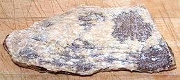

|
Dried Beef | ||||
| Yield: Effort: Sched: DoAhead: |
50% ** 7 days Must |
[Carne Seca, Carne de Sol (Brazil); Ch'arki (Quechua); Charque, Charqui (Spanish); Jerky (English (from Charqui))] | |||
|
Salted and dried meats are important in the cuisines of several
regions in South America. This method of preservation was essential
in times past, but is still carried on because of the unique flavors
and textures it provides.
Thousands of years ago, drying llama meat was very important in the high Andes mountains. In that high, very cold and very dry environment, meat was simply hung out to dry, but in our lower altitudes, with warmer, moister weather, salt must be used in the process. | |||||
| |
| |
|